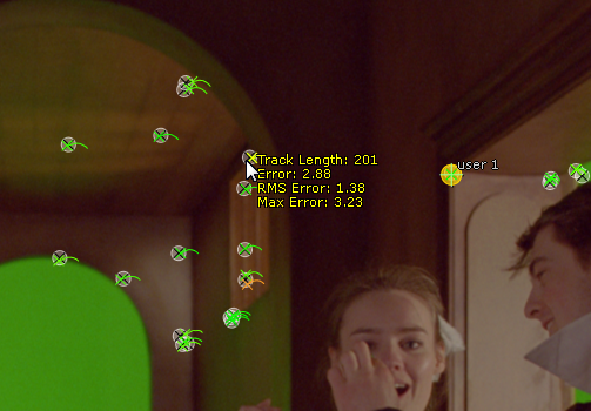
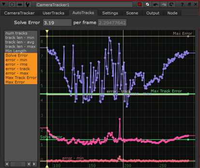
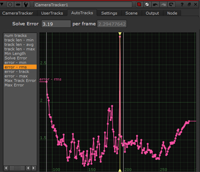
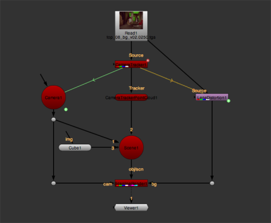
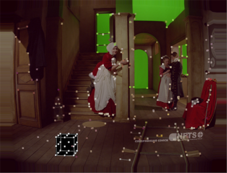
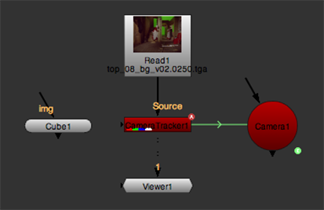
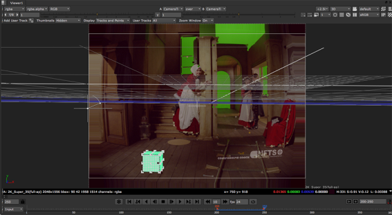

Once the solve data is placed in the Viewer, you can zoom in to display the points more clearly. You can control what appears in the Viewer using the Display controls on the Settings tab:
• Show tracks - show or hide the 2D tracking information.
• Show projected 3D points - show or hide the 2D position of the 3D points.
• Show key tracks only - only show the longest tracks used to calculate the solve.
• Show 3D marker - show or hide 3D markers at each point in the 3D Viewer.
A traffic light scheme applies to the 2D tracks to help find good thresholds for track rejection in the AutoTracks tab - amber by default, green for good tracks, and red for poor tracks.
The circles and crosses are reprojected solved auto-tracks. The closer the 3D point circles are to the feature points, the better the solve.
Hover over a point to display its solve information.

CameraTracker also creates a point cloud in the 3D Viewer allowing you to cross-check the relative positions of the 2D and solved 3D points. Select some points in 2D and then press Tab in the Viewer to switch between 2D and 3D space to check the point positions.
|
|
|
| Several points selected in the 2D sequence. | The same points shown in the 3D Viewer. |
Detailed solve information is displayed in curves in the properties panel on the AutoTracks tab. You can select all solve curves at once or get a more detailed view of a single curve, such as error - rms (root mean square).
TIP: Pressing F with focus on a curve maximizes the selected curve in the space available.
|
 |
 |
| Selecting all solve curves. | Framing a single curve. |
Curves can indicate areas of the sequence where solving encountered problems. For example, the root mean square error curve on the right shows a significant blip on the current frame, as indicated by the playhead position. In this instance, you could try adjusting the Keyframe Spacing or Smoothness and updating the solve. See Troubleshooting Solves
The curves in the graph show the following solve information:
• Solve Error - displays the constant SolveError parameter.
• error min - the minimum reprojection error at each frame (in pixels).
• error rms - the root mean reprojection error at each frame (in pixels).
• error track - the maximum root mean reprojection error calculated over the track lifetime at each frame (in pixels).
• error max - the maximum reprojection error at each frame (in pixels).
• Max Track Error - displays the constant Max RMS Error parameter.
• Max Error - displays the Max Error threshold parameter.
When a User Track is solved, you can review its error in the User Track table on the UserTracks tab. If the error is high, try reviewing the 2D x,y feature track. Alternatively, you can uncheck the User Track's e (enable) column to remove it from the scene before clicking Solve again.
The User Track's 3D position (X,Y,Z) is also shown in the table, as well as in the 3D Viewer.
TIP: You can create a User Track after solving the camera in order to extract a specific 3D position in the shot. To produce an accurate 3D point, the User Track must be defined in 3 or more frames with good parallax. When you've created the User Track, select it in the User Tracks table and click the Update XYZ button to triangulate the 3D position from the current solve.
TIP: After auto-tracking, you might want to select an auto-track and extract it as a User Track. This hints to the solver that this is an important track and should be locked down on. This is particularly useful if a particular part of the scene is not solving properly, despite the auto-tracks appearing to have tracked well in that region.
For more information, see Extracting User Tracks.
After calculating the solve, you may want to review its quality by previewing how well objects added to the 3D scene are going to stick to your footage. If you set Lens Distortion to Unknown Lens before creating the solve, there are two ways to do this:
| 1. | In the 2D Viewer, right-click on a track point (or several selected points, ideally on the same plane) and select create > cube, for example. |
CameraTracker creates a Cube node and places it in the average position of the selected points. You are going to use the cube to test how well it sticks to the input footage.
TIP: If necessary, you can adjust the size of the cube using the uniform scale control in the Cube properties.
| 2. | In the CameraTracker properties, set the Export menu to Scene+ and click Create. |
CameraTracker creates a 3D Scene with a Camera, PointCloud, ScanlineRender, and a LensDistortion node set to undistort the input.
| 3. | Connect your Cube node to one of the Scene node's inputs. |

| 4. | View the output from ScanlineRender. |
The cube you created in step 1 and the point cloud CameraTracker generated are displayed on top of the undistorted footage in the 2D Viewer.

| 5. | Scrub through the timeline to see whether the cube and the point cloud stick to the footage. If they do, delete any nodes you no longer need (such as the Cube node) and proceed to Adjusting the Scene. If they don't, proceed to Troubleshooting Solves. |
| 1. | In the CameraTracker properties, set the Export menu to Camera and click Create. |
CameraTracker creates a Camera node that emulates the camera used on set.
| 2. | In the 2D Viewer, right-click on a track point (or several selected points, ideally on the same plane) and select create > cube, for example. |
CameraTracker creates a Cube node and places it in the average position of the selected points. You are going to use the cube to test how well it sticks to the input footage.

TIP: If necessary, you can adjust the size of the cube using the uniform scale control in the Cube properties.
| 3. | Enable Undistort Input. |
CameraTracker removes lens distortion from the input footage.
| 4. | Make sure that both the CameraTracker and Camera properties panels are open. |
| 5. | Press Tab on the Viewer to switch to the 3D view. |
| 6. | Set the camera look through menu in the top right corner of the Viewer to the camera you created in step 1 and click the button to lock the 3D view to that camera. |
| 7. | At the top of the Viewer, set the Viewer composite dropdown menu to over, so that you are viewing your CameraTracker node over the same CameraTracker node. |
This overlays the input image currently undistorted by CameraTracker over the point cloud in the 3D Viewer.

| 8. | Scrub through the timeline to see whether the cube you created in step 2 and the point cloud CameraTracker generated stick to the footage. If they do, delete any nodes you no longer need (such as the Cube node) and proceed to Adjusting the Scene. If they don't, proceed to Troubleshooting Solves. |
|
|